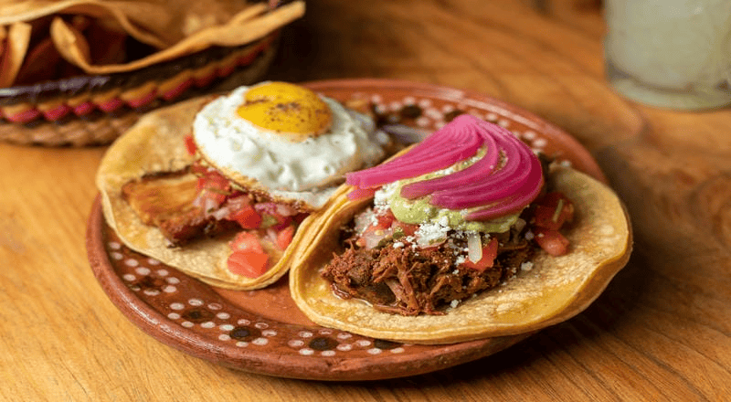
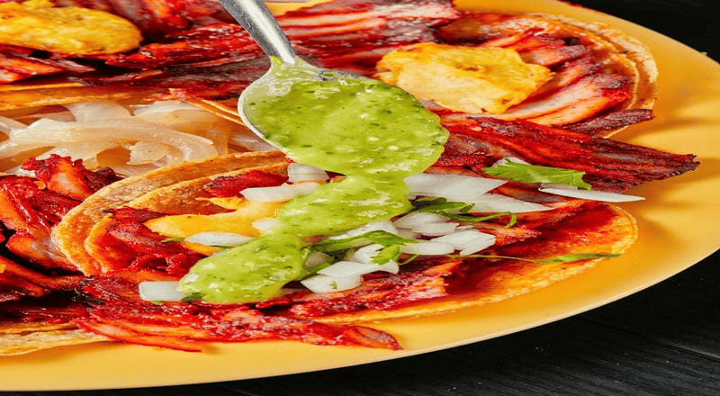

Uno de nuestros platos más destacados son los tacos locos. Los hacemos con tortilla de maíz, cebolla, cilantro, tomate, aguacate y nuestra salsa secreta.
Las carnes que usamos para darle un sabor excepcional son de cerdo adobada para nuestros tacos pastor y cochinita pibil, carne de cerdo frita para nuestras carnitas y carne molida de cerdo para los tacos de chorizo.
Llevamos años aprendiendo a perfeccionar nuestra técnica de cocina de la mano de los mejores Chef mexicanos. A continuación puedes ver nuestra variedad de tacos y como los hacemos en nuestra galería.
Explora nuestra galería:

